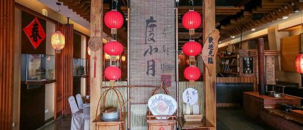

Attracton観光名所
安平老街
「台湾の京都」の異名をとる、古都・台
南。かつて台湾の首都であったことか
ら、重要な史跡が点在し、ノスタルジッ
クなムードが漂っています。17世紀に造
られた台湾最古の街は現在、台湾レトロ
とも称され数々の掘り出し物やお土産、
飲食店が立ち並び写真スポットとしても
人気の高いエリアになっています。

露店めぐりは日中、ノスタルジックな撮影 は夜がおすすめです。
赤崁楼

赤嵌楼（赤嵌樓）は台南中西区の代表的
な古跡で、安平区の安平古堡と並んで台
南の二大古跡になっています夜になる
と、赤嵌楼周辺には黄色いライトが灯
り、古い建築物をより一層味わい深く演
出します。前方の広場ではよく音楽会が
催され、台南市民の夜の憩いの場になっ
ています。赤嵌楼は、昼も夜も独特の魅
力で楽しませてくれます。

遅い時間帯はライトアップも楽しめます。
8:30 ～21:30
Gourmetグルメ
グルメが有名な台湾において特に有名で あり、台南でしか味わえないものをご紹 介いたします。
担仔麺
タンツーメン
日本の台湾ラーメンの元祖とも言われる
グルメ。中でも「度小月」は各地に支店
を持つ人気店。台南ではその度小月本店
があり連日大人気です。
蝦仁飯
エビ飯
台南10大美食にも選ばれている代表料
理。中でも有名なのが「矮仔成」。台湾
でも台南に来ないと味わえない料理で日
本人が大好きな味です。
小籠包
ショウロンポー

台湾料理のといえば小籠包。台南にある
「上海華都小吃」は、ミシュラン掲載実
績や台湾政府から表彰されている元祖
「松針小籠包」誕生の地です。

Pickupピックアップ
蓮と温泉の国 白河
きらびやかな都心や歴史情緒ある台湾。
そんな台湾のもう一つの楽しみ方が自然
に囲まれながらの観光です。観光客の少
ない所でゆっくり楽しみたい方におすす
めです。
温泉名：関仔嶺温泉
（グァンズーリン・ウェンチュエン）
台湾4大温泉地の一つで、白河周辺には
数々のホテルがあり、温泉を楽しむこと
ができます。このエリアは泥温泉が有名
で国内外問わず女性に大人気です。


温泉宿は最新のホテルから老舗の旅館ま
で多種多様に揃っています。

蓮の実の生産で台湾全土の3分の2の生産
量を占める「蓮のふるさと」。美しい白
河で癒しの時間をお過ごしください。